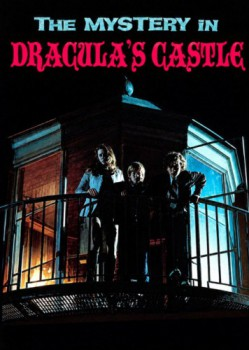

The Mystery in Dracula's Castle (1973)


Country:United States, 91 minutes
Spoken languages:English
Genres:Family, Horror
Director(s):Robert Totten
Writer(s):Sue Milburn
Video Codec:Unknown
Number: 1597
IMDb Rating:

Certification:
Storyline:
Two brothers and a stray dog stumble upon some jewel thieves in a lighthouse.
Cast:
Clu Gulager (as Keith Raynor), Mariette Hartley (as Marsha Booth), Johnny Whitaker (as Alfie), Mills Watson (as Noah Baxter), John Fiedler (as Bill Wasdahl)
Medium: Media file,
Location: D:\Disney\The Mystery In Dracula's Castle.mp4
Loaned: No
Aspect ratio: Unknown